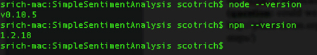
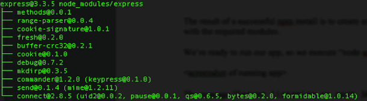
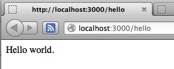
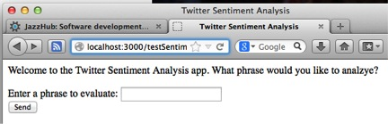
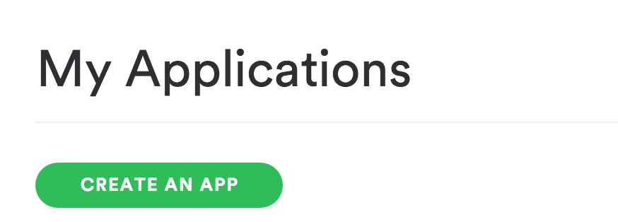
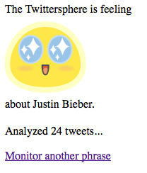
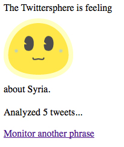
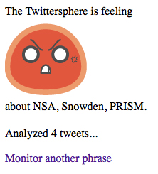

There is a growing movement (commonly called the STEAM movement) to integrate the Arts into STEM (Science, Technology, Engineering, Math), in orer to pique the interest of those, especially kids, who would not typically be interested in STEM topics.
“Waton's powerful language tools have been used to analyze everything from Jeopardy questions to medical documents. Why not expand Watson's expertise into the realm of art and entertainment?”
This article will give you a foundation to connect the powerful langauge processing capabilities of Watson to the songs and lyrics you love. We will start by authenticating with a Spotify account to retrieve playlists of popular songs, then fetching those song lyrics from genius.com, and finally using the Watson Developer Cloud to do fun and interesting things with the lyrics.
In this installment of "Making Watson a Rock Star", we will use the Watson Language Translation service to translate the lyrics of popular songs into Spanish, to help English-speaking users improve their Spanish in a way that is fun, engaging, and memorable.
What you'll need to build a similar app
- A Bluemix account
- A basic familiarity with Node.js and a Node.js development environment.
- These Node.js modules:
- Express framework: Makes it easy to build Node.js web apps.
- Watson Developer Cloud: Provides many SDKs that use cognitive computing to solve complex problems.
- RapGenius-JS module: Provides a client that enables you to query genius.com (formerly rapgenius.com) and retrieve information about rap and rock artists and songs.
WATCH:Getting started with Node.js (video demo)
The steps below describe the most basic approach. For more advanced tooling to speed your development, see Additional tooling considerations.
Step 1. Fork the application code from github
- Run the
nodeandnpmcommands:Figure 1. Confirming that Node.js and NPM are set up on your system
 - Create the simplest Node.js Express app possible: Hello
Node.js (see Listing 1).
In a new directory, create the app.js file, the main file of the Node.js app. Tell Node.js that the Express module is required, and create the Express app. Register a route so that requests for
/hellowill be handled by the anonymous function shown in Listing 1. The handler for/hellouses the Express helpers to send a simple text response. The send method handles details such as defaulting the content type and length. When using Express, we can ignore some of the details of the underlying HTTP conversation.Listing 1. Hello Node.js
Note: The program could be even simpler, but a few additional lines of code enable it to run in the CloudFoundry runtime. In CloudFoundry, the app will be relocated to a different port (the port can be discovered from the environment).
- Give Node.js some additional information about the app, as
shown in Listing 2.
Create a
package.jsonfile to tell the app that the Express module will be used, and name the app "Simple Sentiment Analysis App." Since this app is not intended to be published to the NPM registry, you can mark it as private. Finally, declare that the app depends on a 3.x version of the Express module.Listing 2. package.json
Run and test your Hello Node.js app
Next, run and test the Hello Node.js app using these steps:
- Before running your app, prepare the node environment using
NPM to fetch the dependencies declared for the app (and
their dependencies and so on).
Figure 2. Prepare the node environment
The result of a successful NPM install is the creation of the
node_modulesdirectory, populated with the required modules. - Type
node app.jsat the command line.Figure 3. Run the node app.js command
The message "Server listening on port 3000" confirms that the app has started and is listening for requests.
- Test the behavior of the app by pointing a browser to http://localhost:3000/hello.
Figure 4. Test the behavior of the app

Step 2. Create an app in Bluemix and bind it to a Watson Language Translation service
Now that your basic app is running and the environment is set up, it's time to add some real function using the very cool sentiment module by Andrew Sliwinsky. He describes it as "a Node.js module that uses the AFINN-111 wordlist to perform sentiment analysis on arbitrary blocks of input text." This is a relatively simple implementation of sentiment analysis, as you'll see. It simply scores the words in your text using a dictionary of English words that have been rated for positive or negative sentiment.
- To begin using the sentiment module, update the
package.jsonto include it as a dependency:Listing 3. Update package.json
- Tell Node.js to get this new module with the command
npm update. (Note: The docs suggest thatnpm installshould also have picked up the new dependency, but that was not the behavior I saw.) - Require the new sentiment module:
- Create another route to experiment with the sentiment
module:
Listing 4. The sentiment analysis app interface code
Apologies to web architects and designers everywhere for the brute force simplicity of this new function. I promise we’ll do something more intelligent later. For now, we’re going to put up a form that lets us enter a phrase and then respond with the rating provided by sentiment. The key function call is
sentiment(phrase, function). In the spirit of Node.js, the sentiment library is asynchronous, so the result of the analysis is processed by a callback function. - Restart the app and point a browser to http://localhost:3000/testSentiment.
Figure 5. The sentiment analysis app user interface

“Et voilà, a fabulous user interface for sentiment analysis!”
Scoring sample sentiments
Here are some hypothetical results from our sentiment analysis app:
Table 1. Hypothetical results of analyzing "Node.js"
| Sentiment | Score | Interpretation |
|---|---|---|
| Node.js is cool, I love it | 4 | Very positive sentiment |
| Node.js is uncool, I hate it | -3 | Very negative sentiment |
| Mi piace Node.js. Node.js é bellissima | 0 | No sentiment detected. Sentiment has only an English dictionary. |
| Node.js is not cool, I do not love it | 4 | Oops! Very positive, same score as the first example. Sentiment is not aware of grammar or negation. |
You can see the limitations of this approach, namely that the sentiment module only has an English dictionary and is not aware of grammar or negation. Still, it’s probably good enough to get the gist of most tweets.
Step 3. Register your application with Spotify.
The other essential component of the app is the connection to Spotify, so that it can retrieve songs and playlists.
- Go to developer.spotify.com and login using your Spotify (or Facebook account).
- Obtain a set of keys by registering it under your Twitter developer account. Go to the Twitter "My Applications" page to create and manage the app.
- Add a couple of functions to your app to test the connection
to Twitter. First construct a twitter object using ntwitter
and OAuth keys, then make a simple call to verify those
credentials.
Listing 5. Testing your Twitter connection
- Restart the app and visit
/twitterCheckto see that the connection and login to Twitter are working:Figure 6. Test the connection to Twitter
Note that it does identify me as the owner of the app that is connecting.
- Now that the connection to Twitter is established, add a
function to monitor Twitter for one or more phrases.
ntwitter provides a very simple method for doing this:
- Call
stream()and pass the phrase to be monitored. - Use a callback function to process tweets as they
arrive.
The Twitter Stream API allows the app to open a Stream and keep pulling data as long as it is available. This function works perfectly for the Node.js app, because it can keep a stream open on the server and update counters and average sentiment as it processes the stream.
- Create a simple interface to set the phrase to be monitored and to display the results as they come in. A more sophisticated app could store the Tweets to a database for more complex processing.
- Call
Listing 6 shows the essence of the code to open a stream and log a sample of the tweets:
Listing 6. Opening a stream and logging tweets
Step 4. Put it all together
Okay, now we have all the parts in place to complete your app:
- A basic Express app to serve up various pages
- A sentiment analysis function to assess the sentiment of text
- A connection to Twitter to provide a source of tweets to analyze
Now we just need to combine them to do something interesting. The finished app will prompt the user for a phrase, call Twitter to open a stream filtered on the phrase, analyze the sentiment of each matching tweet, and create a page to monitor the sentiment over time.
Keeping the user interface very simple, Listing 7 shows the full application, in all its Old School Struts-style glory:
Listing 7. The full application
We’ve finally put something at the root path of the app as Listing 7 shows. The first time through, the app presents a welcome prompt and gathers a phrase to monitor. It then sets up the monitoring stream and presents a results page. The tweeter’s stream callback is updated to pass the tweet contents through the sentiment function, increment the tweet count, and record the sentiment. Non-English tweets are filtered out.
For presentation purposes, the app uses the
sentimentImage() function, which returns an image
URL for a given sentiment value. The ranges for happy and grumpy
are arbitrary. I found the range of sentiment to be surprisingly
narrow for most topics, maybe due to the relative shortness of
tweets. Feel free to play with these ranges.
So let’s give it a try. Here are the results of a few test runs:
Figure 7. Twittersphere is positive about Justin Bieber
Figure 8. Twittersphere is ambivalent about Syria
Figure 9. Twittersphere is angry about NSA, Snowden, Manning, PRISM
Additional tooling considerations
In Step 1, I showed how you can use the node and
npm commands to manage and run the application. You
can easily do all of the coding with a text editor. However, in
developing the app, I actually used a couple of other tools to
ease my development.
Also, I ultimately wanted to push the app to a Cloud Foundry-compatible Node.js runtime environment, such as CloudFoundry.com or IBM’s emerging BlueMix platform. So the final app includes a few extra files required for that environment: the manifest.yml file describes the app and its resource needs to the Cloud Foundry runtime, and the npm-shrinkwrap.json files tell the Cloud Foundry Node.js runtime exactly which modules the app should be deployed with.
Conclusion
In developing this app using Node.js, Express, ntwitter, and sentiment, I got a real appreciation for how easy it is to consume capabilities like Twitter access and sentiment analysis when they are packaged as Node.js modules. It’s easy to see why Node.js is so popular for developing web and mobile apps.
I'm now curious to try using Express to add a more professional user interface to the app. I think there's plenty of room to improve it. ; )
RELATED TOPICS:Node.jsJavaScriptSocial analytics
RIGHT COLUMN RESERVED FOR INLINE COMMENTING
AREA DOES NOT APPEAR IN PREVIEW MODE